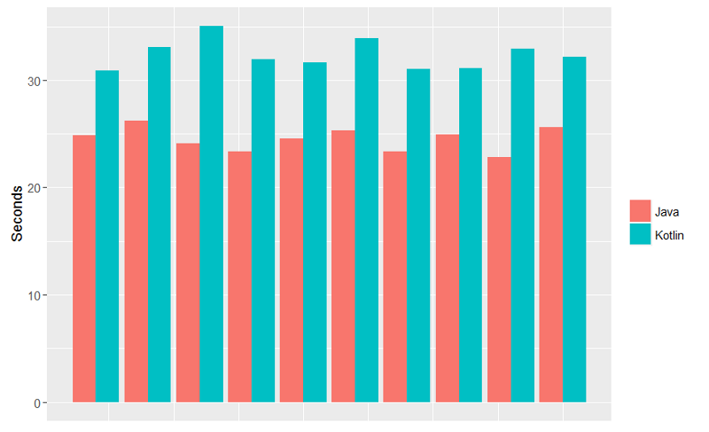
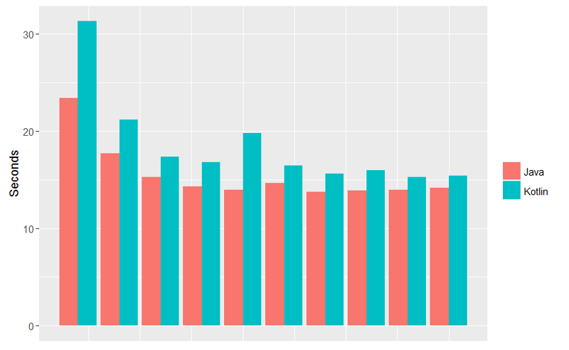
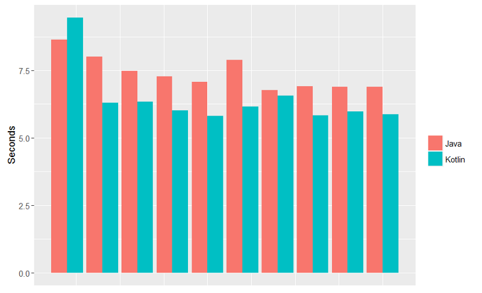
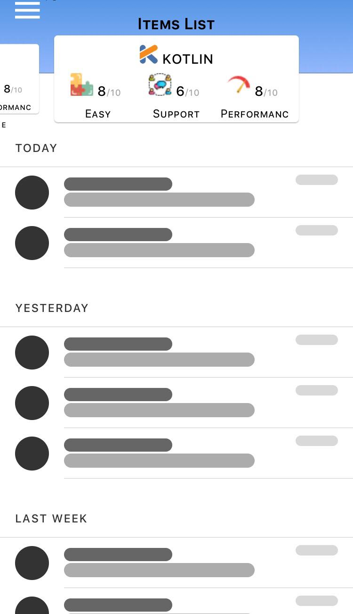
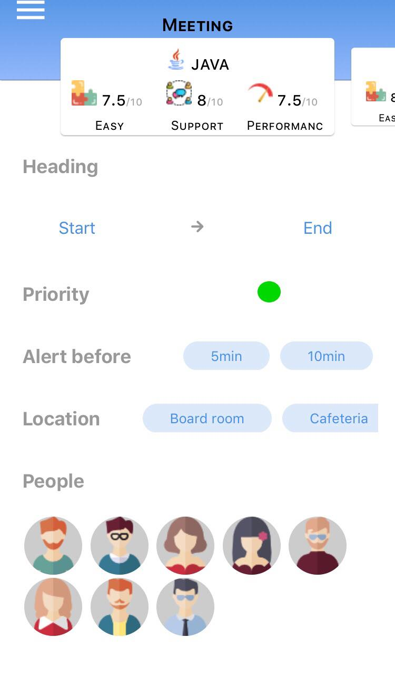
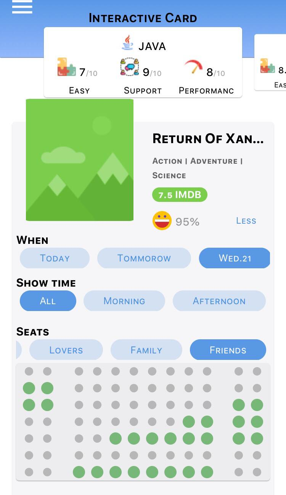
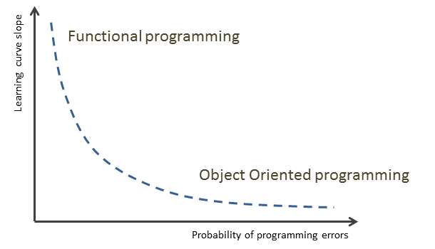

Intro
Let's start with some story time !
Once upon a time, there was a language called Java that was widely used by tech companies-and still- to develop web, desktop and mobile applications with high performance and scalability. For now, let's put our focus on mobile applications as the use of smarthphones became a necessity and especially for android applications because Android OS has the largest install base of any operating system; And it's not just for phones or tablets but also when it comes to smart TVs, cars and smart watches etc ... So that's why I was drawn to make this comparison out of curiosity.
Java has always been the only default programming language in Android until Google announced the new addition to its latest Android (Android Oreo) : a brand new programming language called Kotlin. Kotlin had been under developement for six years by JetBrains since 2011 and the first version v1.0 was released in 2016 after Google decided to partner with JetBrains development team to bring support to Android.
So the question to be raised will be:
Java or Kotlin, which is better for Android mobile applications?
In order to potentially find a final answer to this question, I decided to lead this comparison by invoking 3 different aspects: performance, language features and paradigms, so I basically focused on the developers experience more.
Language Features
Apparently, kotlin was created to try to address some issues that Java has. In this section, I will try to bring up the solutions solved in Kotlin that were once a pain for Android Developers. Here are some important features:
| Feature | Explications |
|---|---|
| Interoperability | Java and Kotlin are interoperable which means we can find both type of files in the same project as well as they can invoke each others librairies. |
| Data Classes | In Java, in order to write a POJO, you have to declare the fields, write the constructor and also the getters and the setters of all attributes, too much code isn't it? Well, in Kotlin, one line of code is fairly sufficient as shown in the example below: data class User(var name: String, var age: Int) |
| Extension functions | In Java, if we want to add a new funtionnality to a class, we will have to inherit from this class or use the Decorator design pattern. So the goal in Kotlin is to not modify the source code of the class we want to extend by adding new members but rather create new functions that we can call using this class objects, those functions are called extension functions. |
| Immutability | Like in Java, we use the keyword final if we want to declare a variable that won't be reassigned later. In Kotlin, there are the var and val keywords to manage the immutability of a property. So a property declared with var has a setter and a getter (mutable) while a property declared with val has a getter and a private setter (immutable) and the difference between final and val is that val is thread safe. |
| Lambda expressions | Even the latest Android version supports only java 7 and lambda expressions were added until Java 8 so that's why Kotlin developers added lambdas support to Kotlin to resolve this problem. Lambda expressions are anonymous functions that can be passed in an argument of another function. |
| Null safety | One of the common exceptions thrown in Java is the NullPointerException so Kotlin makes all types non-nullable by default so if a developer needs to use variables that hold a null value, it has to be declared as a null value like this : var toto: String? so if we want to access toto, the compiler will do a null check on the nullable variable. |
| Type aliases | This feature improves the code readibility by assigning a name to a complex type.
|
| Anko | I'm specifically interested in the Anko layouts which is a DSL that allows us to build UI's with zero XML code. For example, to create a fieldtext and a button with a listener with Kotlin, we can write the code below instead of creating the XML layout and then binding the view and the data in a Java class:
|
Now that we've actually seen some code features and functionnalities that were added in Kotlin we must however test the performances of the language when it comes to rapidity and its behaviour in different use cases and that's what we will represent in the next section.
Performances
In this section, I will try to mention the most remarquable aspects that would make an Android application that is based on Java different from the one based on Kotlin:
Code size:
According to previous features we can say that Kotlin requires much less lines of code so for example,a java application that has 5,491 methods and 12,371 lines of code was reduced to to 4,987 methods and 8,564 lines of code after converting it to Kotlin.
Build speed:
1. Clean builds
We will be testing with these two scenarios after 10 consecutive builds:
- Execute without Gradle daemon (worst case scenario) : Java compiles 17% faster than Kotlin. 
- Execute while Gradle daemon activated : Java compiles 13% faster than Kotlin. 
2. Incremental builds
- In general, while activating incremental builds after few executions, Kotlin's compilation becomes slightly faster than Java. In conclusion, the most common scenario for developers is the incremental build so we notice that Koltin is not less faster than Java.

Ten consecutive incremental builds with one core file changed.
Test application:
I chose 3 common use cases to test an android app based on Java and Kotlin according to 3 criterias: easy, support and performance and I gave each one a grade on 10. I chose some simple parts of a friend's app and is still in progress which is based on java and I converted those parts to Kotlin code and tested it out.
  Java
| Use case | Easy | Support | Performance |
|---|---|---|---|
| Item List | 7/10 | 9/10 | 9/10 |
| Interactive card | 7/10 | 9/10 | 8/10 |
| Meeting schedular | 7/10 | 9/10 | 8/10 |
Kotlin
| Use case | Easy | Support | Performance |
|---|---|---|---|
| Item List | 8,5/10 | 8/10 | 7/10 |
| Interactive card | 8,5/10 | 8/10 | 6/10 |
| Meeting schedular | 8,5/10 | 8/10 | 6/10 |
Conclusion
We notice that in these use cases code compiles slower while using kotlin but it becomes faster with incremental build so I decided to keep the results of the first compilation attempt. When it comes to code size, Kotlin requires less code than Java so that's why I increased the Kotlin's score on the 'Easy' column. And lastly, when it comes to the developers community of both languages, I gave a slighlty lesser score to Kotlin because its community is still sparse compared to Java. Therefore, documentation, tutorials or information about Kotlin are still not handy.
Paradigms
Object oriented programming
OOP is based on three main concepts: encapsulation, inheritance and polymorphism while the main character is the object, it belongs to the imperative family
.Functionnal programming
Functionnal programming is based on composing pure functions, avoiding shared state, mutable data, and side-effects, it belongs to the declarative family
Src:https://dzone.com/articles/object-oriented-programming-strikes-back
In general, Object oriented programming says that bringing together data and its behaviour in a single location makes it easier to understand how a program works. FP says that data and behaviour are distinctively different things and should be kept separate for clarity. In our case, Java has always been an object oriented programming language until Java 8 and it started slightly to borrow some functionnal programming styles with lambda expressions for instance.
But the problem is that android support only Java 7 so that's why Kotlin creators decided to bring more functionnal programming into Kotlin which makes it an Object Oriented language with a bit of a functionnal programming style.
A side note about lambda expressions for those who are not familiar with this concept. Let's start with an example of a simple lambda expression:
listOfDrinks.stream()
.filter(arg -> arg.getDrink() == WATER)
.collect(Collectors.toList());
The stream function creates a stream out of our collection "listOfDrinks" and then its filtered such as each element of the list is represented by an argument 'arg' and finally we collect the results in a list again, this terminal action is necessary in lambda expressions.
And no, abusing of the use of lambda expressions does not mean that it is a functionnal programming, it would more like respecting the immutability of the state for instance everytime a function is called, the same input must return the same output. So does that make Kotlin a functionnal programming language?
Definitely not.
it still lacks some of the most important features like Higher Kinded Types and Typeclasses but the goal isn't to switch to FP but rather just take advantage of some of its useful features like inline functions.
Conclusion
I guess after invoking these different aspects, we can now say that Kotlin is probably the best for Android applications as it seems more concise and progressive and for a language that just started it has quite plenty of ressources on the internet and an ethusiastic community. Neverthless, I still think for a good programming grasp of concepts, it is likable to learn and be comfortable with Java before moving to Kotlin.
Credits
I was inspired by these sources: